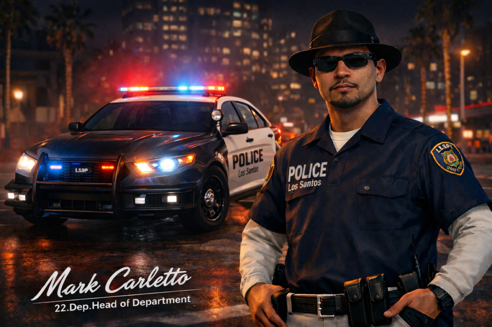

Los Santos Police Department
High Command Bewerbung

Sehr geehrte Damen und Herren der Leadership,
Hiermit möchte ich, Jack Barbosa, meine Bewerbung für eine Position im High Command des Los Santos Police Departments einreichen.
Ich bin seit Dezember im aktiven Dienst des LSPD und konnte in dieser Zeit umfassende Erfahrungen sammeln. Derzeit bin ich sowohl in der Task Force als auch in der Intelligence Unit tätig. Diese Positionen haben mir nicht nur taktisches Verständnis und operative Stärke vermittelt, sondern auch strategisches Denken, Diskretion und analytische Fähigkeiten abverlangt.
In der Task Force war ich maßgeblich an koordinierten Einsätzen beteiligt, insbesondere bei organisierten Kriminalfällen und komplexen Gefahrenlagen. Teamarbeit, Führungsstärke und schnelles, strukturiertes Handeln standen hierbei stets im Vordergrund.
Innerhalb der Intelligence Unit habe ich gelernt, Informationen gezielt auszuwerten, Zusammenhänge zu erkennen und operative Maßnahmen strategisch vorzubereiten. Die enge Zusammenarbeit mit anderen Abteilungen sowie das vertrauliche Arbeiten mit sensiblen Daten gehören hier zu meinem Alltag.
Ich strebe eine Position im High Command an, da ich meine gesammelte Erfahrung, meine Loyalität gegenüber dem Department sowie mein Verantwortungsbewusstsein auf strategischer Ebene einbringen möchte.
Mit freundlichen Grüßen
Stellv. TF Leitung
I.U Senior Investigator
Ich strebe eine Position im High Command an, da ich meine gesammelte Erfahrung, meine Loyalität gegenüber dem Department sowie mein Verantwortungsbewusstsein auf strategischer Ebene einbringen möchte.
Mein Ziel ist es, das LSPD nicht nur operativ, sondern auch strukturell weiterzuentwickeln, interne Abläufe zu optimieren und als Vorbild für unterstellte Einheiten zu dienen.